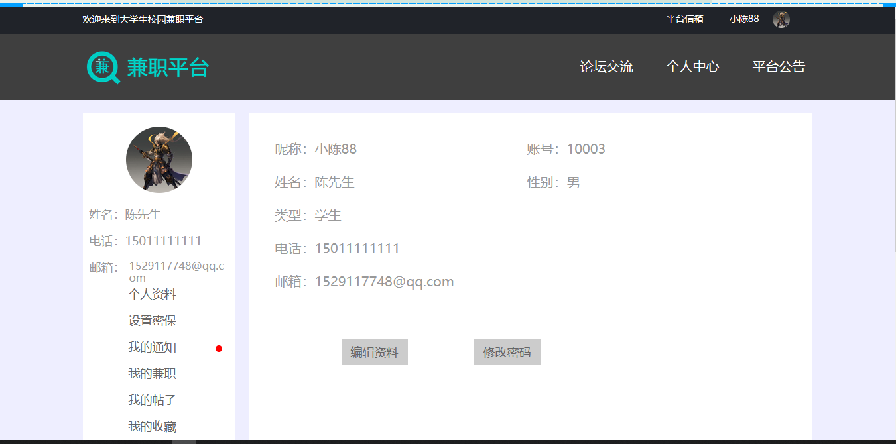

SSM 兼职论坛
一、项目介绍
214
兼职论坛基于 Spring+SpringMVC+Mybatis 开发，系统分为管理员和普通用户两种角色，系统分为前台和后台，管理员可以登录后台。
前台功能：
-
兼职发布
-
兼职浏览
-
论坛交流
-
发布帖子
-
评论帖子
-
收藏帖子
-
在线聊天
-
平台公告查看
-
个人中心
后台功能：
-
用户管理
-
兼职管理
-
帖子管理
-
聊天管理
-
广告管理
-
平台信箱
-
收藏管理
-
轮播图管理
-
平台公告管理
二、技术框架
-
后端：Spring，Springmvc，Mybatis
-
前端：layui，jquery
三、安装教程
-
用 idea 打开项目
-
在 idea 中配置 jdk 环境
-
配置 maven 环境并下载依赖
-
配置 Tomcat8.0
-
新建数据库，导入数据库文件
-
jdbc.properties 文件中将数据库账号密码改成自己本地的
-
启动运行，前台访问地址
http://localhost:8080
后台访问地址 http://localhost:8080/manager/login/goServerLogin.action， 账号密码 10001/123456，普通账号密码 10003/123456
四、项目截图
